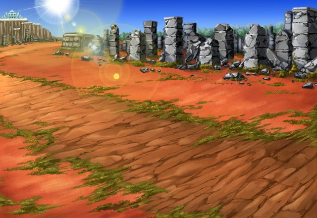

リム
久しぶりに先輩の戦いを間近で見られて ちょっと興奮しちゃいましたよ♪
セラ
ありがとうございました。 Shou-chan召喚師。
エリーゼ
残念だけど、 今日は言う通りにするわ……。
エリーゼ
リムちゃん、セラさん、誘ったというのに、こんな結果になってごめんなさい……。
リム
いえいえ、気にしないでください。 エリーゼさんのせいじゃないですし、
リム
それに、謝られるなんて、 こっちこそ申し訳ないですよ。
リム
あの崖を登らずに済んだのは、 正直、助かりましたし……。
リム
エリーゼさんやセラちゃんと 長くおしゃべりできて楽しかったなー、と。
エリーゼ
じゃあ今度は、魔神とか出ない、 もっと安全な山を探しておきますね！